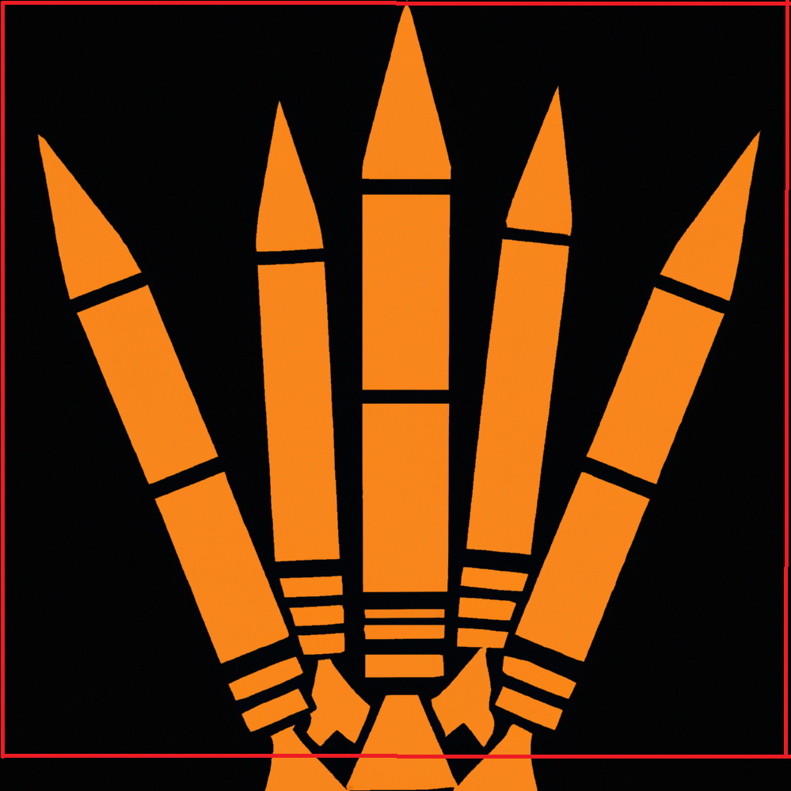
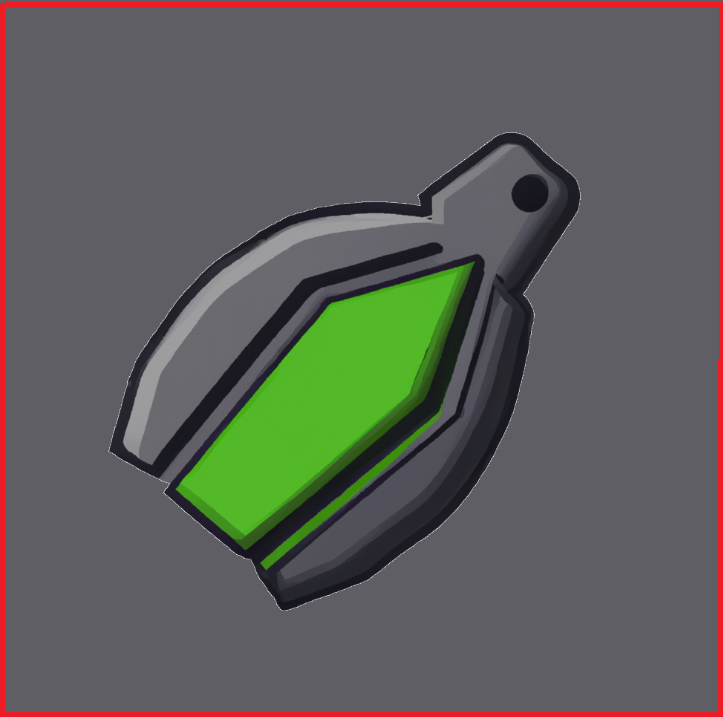

Space Scape is an easy game to learn but difficult to master. You are a space traveler but a horde of evil space aliens now wants you dead, you will have to dodge their laser fire as you rocket through space dodging meteors and UFO's. Space Scape is endless, however it gets increasingly difficult as your score increases.
The game controls are the up, down, left and right arrow keys. Your rocket is constanly flying up however you can slow your rocket temporarily by pressing the down key, beware though because if you slow too much the aliens will catch up and you may crash. Your rocket will return to full speed when you release that key. You also have the left and right keys to dodge incoming projectiles. The up arrow allows you to shoot object that are above you.
There are 4 ways to die in Space Scape. If you collide with an alien spaceship, if you get hit by a laser, if you collide with a meteor and if you collide with a UFO. If you are unsure how close you can get to aliens, meteorites and UFO's you can toggle hit boxes to show the boundaries of each game object. If you just want to see how the game works you can toggle God mode and forget all about death.
There are 2 consumable items in the game as well. Because your ammo is finite you have to restock, Throughout the game there will be ammo boxes you can collect. they look like this . You can also find nukes which will blow up all current enemies on the screen. They look like this .
SpaceScape was one of the first projects I built using JS, due to this its likely to have many inneficiencies and redundancies. I dont currently maintain or update this project however every now and again I get a spark of interest and make some minor adjustments. I released it on GitHub as an example of an easy game that anyone can make with a little bit of time and will.
Anyone is more than welcome to copy, edit and add to this as they see fit, all game assets used are in the public domain or royalty free